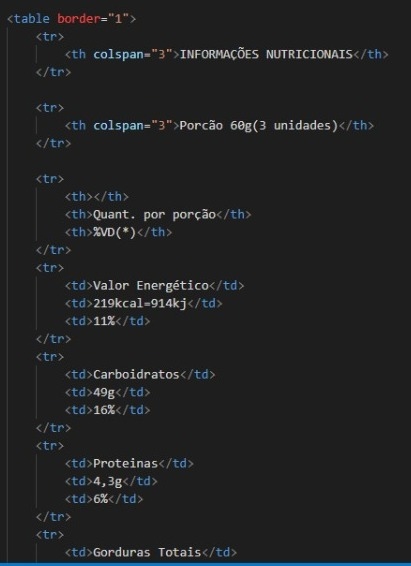
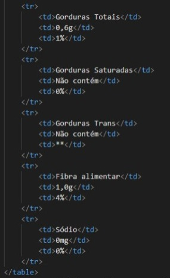

Para criarmos uma tabela, dispomos de várias tag, todas elas com abertuta e fechamento, abaixo listrei as principais e seus significados.
A tag "table" - Define uma tabela;
A tag "th" - Define um cabeçalho de tabela;
A tag "tr" - Define uma linha de tabela;
A tag "td" - Define uma célula de tabela;
A tag "caption" - Define um titulo na tabela;
A tag "border" - Define uma borda na tabela;
A tag "colspan" - É usada quando queremos que uma informação ocupe mais de uma colona, basta colocar a tag e entre aspas o número de colunas que ficara o texto;
Abaixo temos um exemplo de uma tabela nutricional:
| INFORMAÇÕES NUTRICIONAIS | ||
|---|---|---|
| Porcão 60g(3 unidades) | ||
| Quant. por porção | %VD(*) | |
| Valor Energético | 219kcal=914kj | 11% |
| Carboidratos | 49g | 16% |
| Proteinas | 4,3g | 6% |
| Gorduras Totais | 0,6g | 1% |
| Gorduras Saturadas | Não contém | 0% |
| Gorduras Trans | Não contém | ** |
| Fibra alimentar | 1,0g | 4% |
| Sódio | 0mg | 0% |
*Valores diários com base em uma dieta de 2000kcal ou 8400KJ. Seus valores diários podem ser maiores ou menores, dependendo de suas necessidades energéticas.
Abaixo imagens do código.
 